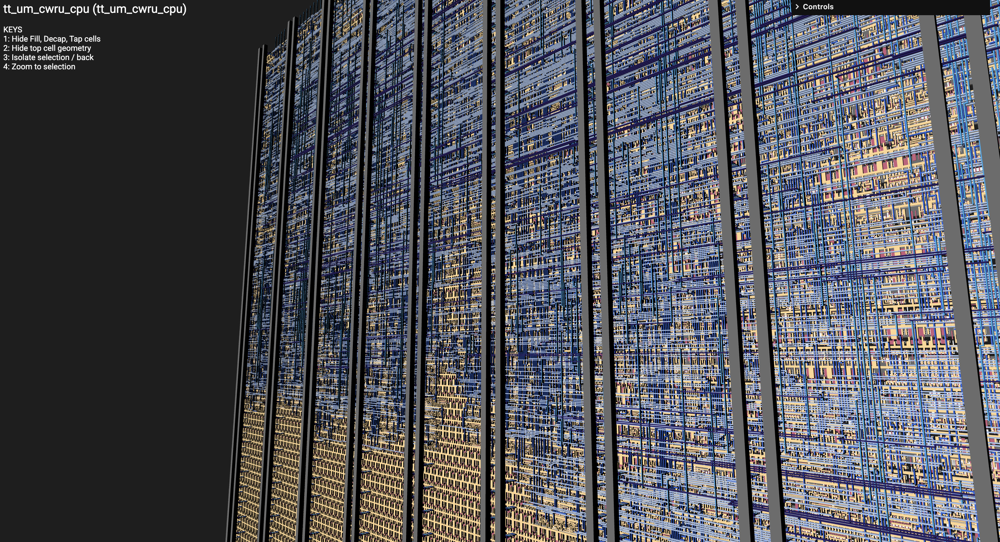
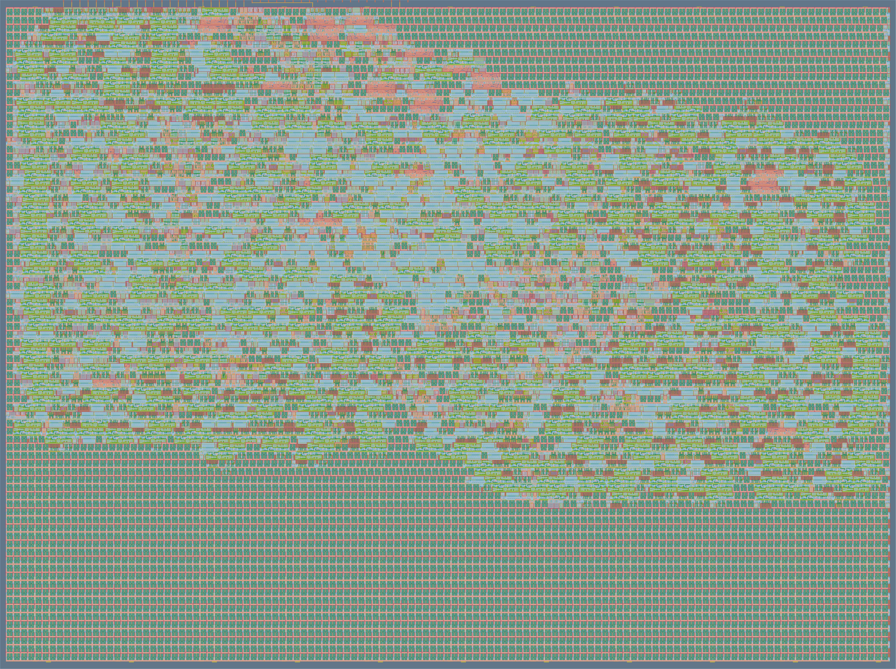
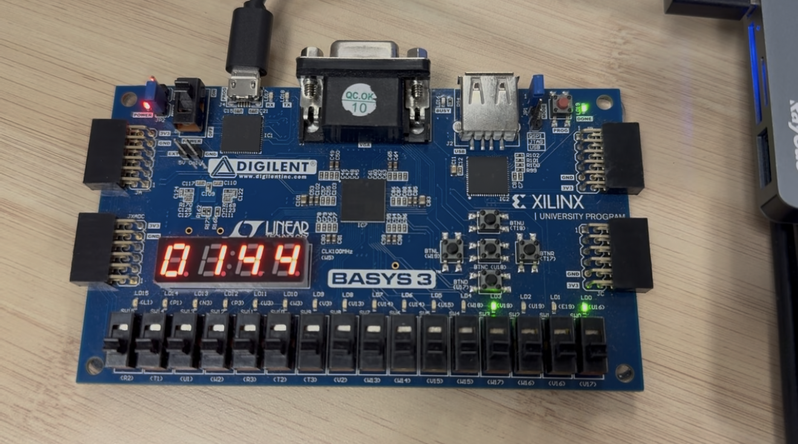

We take digital designs from RTL all the way to a physical chip using open-source EDA tools and Tiny Tapeout. Our first tapeout was a single-cycle RISC-V processor — yours could be anything.



external resources worth knowing alongside the handbook
A CPU is the classic first project — but it doesn't have to be yours. Here are some ideas spanning different difficulty levels and interests.